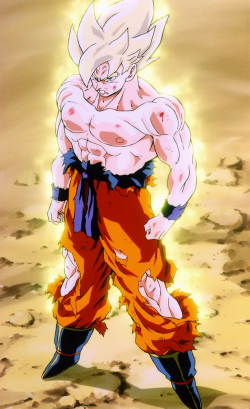
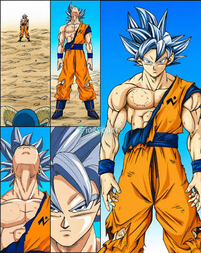

𝑸𝒖𝒆𝒎 𝒆𝒍𝒆 𝒆́?
Goku é o protagonista da franquia de anime e mangá Dragon Ball. Ele é um alienígena da raça Saiyajin que foi enviado à Terra quando bebê e criado como humano. Conhecido por seu amor puro pelas artes marciais, determinação e bom coração, Goku passa a vida treinando para enfrentar guerreiros poderosos e proteger o universo de grandes ameaças.

Movido pela fúria após testemunhar Freeza matar Kuririn em Namekuzei, Goku rompe seus limites emocionais e desperta o lendário Super Saiyajin, transformando o maior medo do vilão em realidade por causa da sua própria crueldade.

Após testemunhar o sacríficio do anjo Merus na luta contra Moro, Goku conteve sua fúria e canalizou o luto em calma absoluta para despertar o Instinto Superior Perfeito, dominando a forma de cabelos prateados para anular totalmente o vilão com movimentos automáticos e precisos.